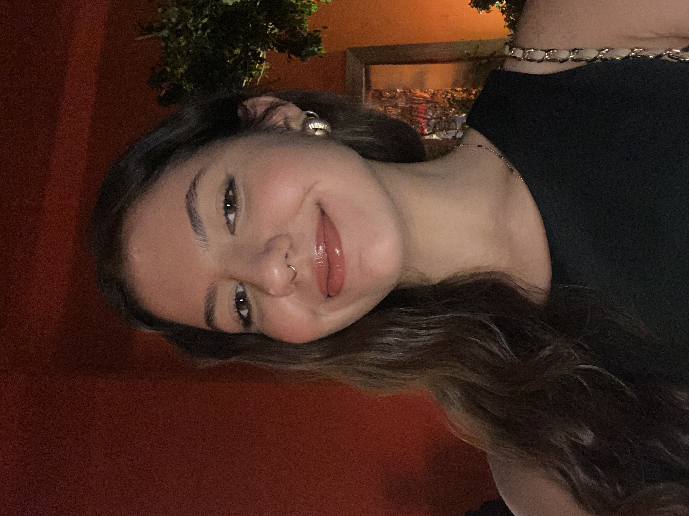
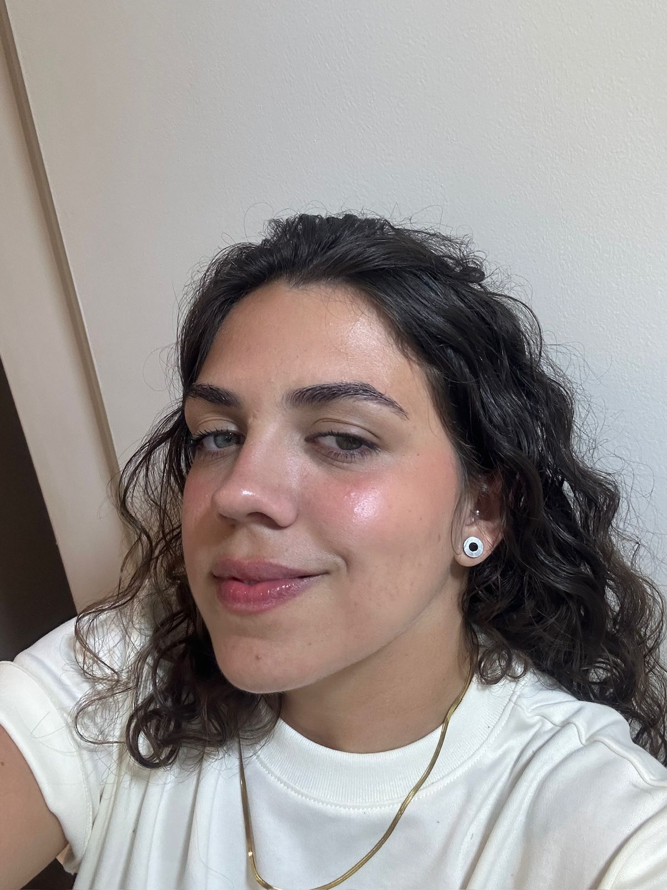
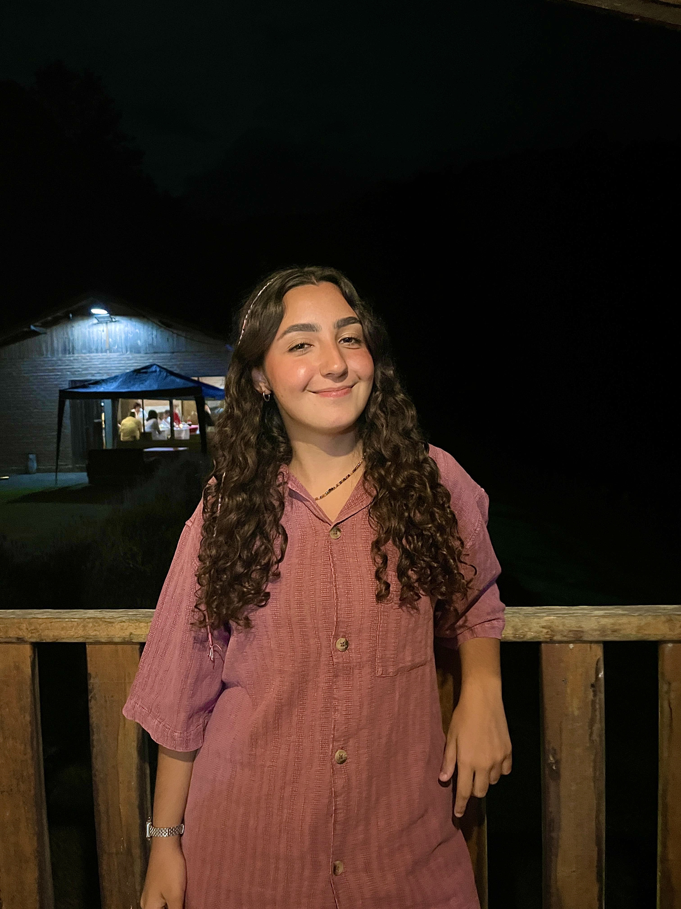
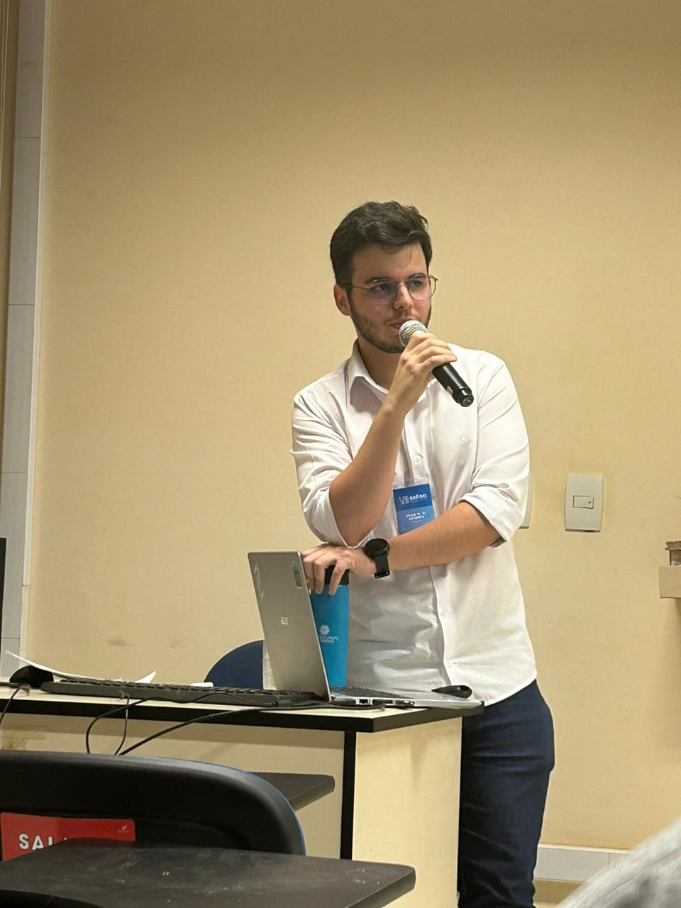
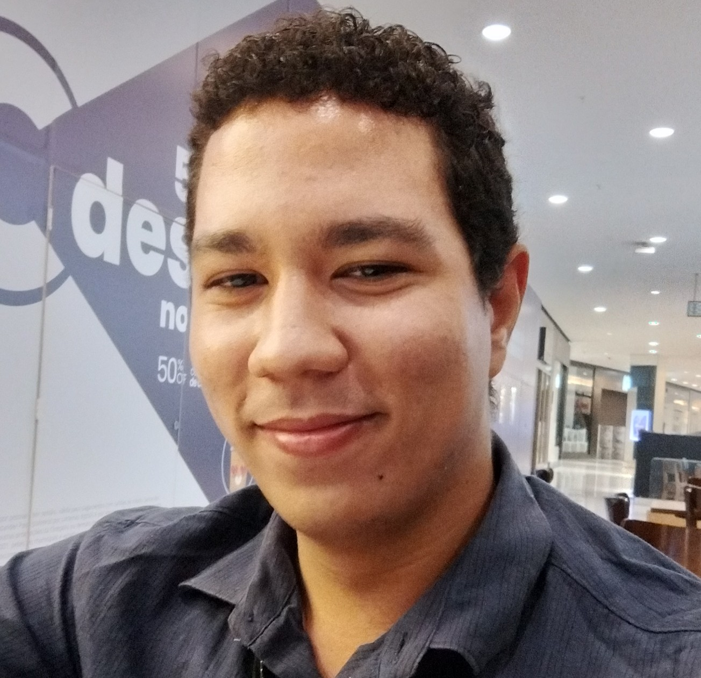
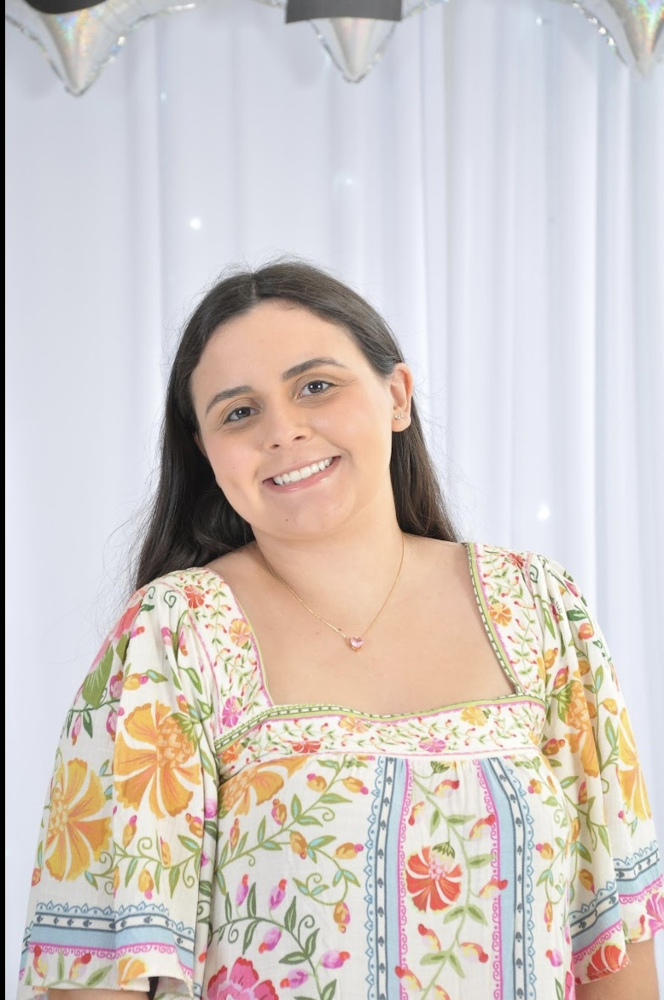
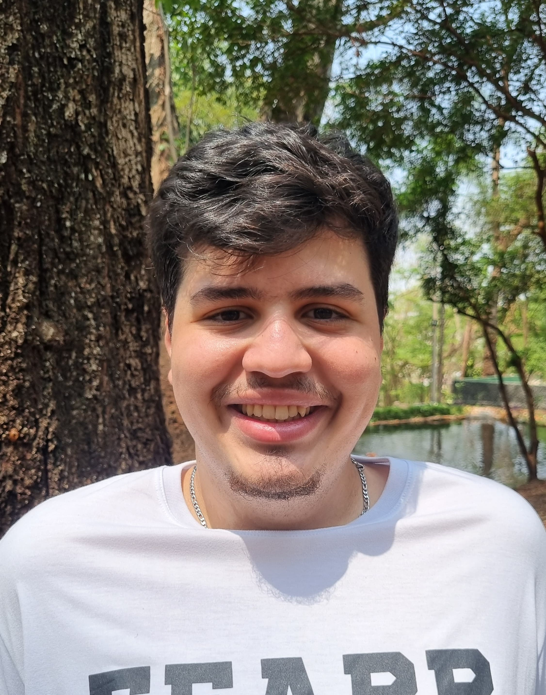

Integrantes
Sobre o projeto
Conheça a equipe por trás das análises e publicações deste semestre. Nosso projeto faz parte das Atividades Extensionistas Currículares (AEX), o que significa que nosso time é dinâmico e rotativo.
A cada novo ciclo, novos estudantes assumem o desafio de levar o conhecimento acadêmico para a sociedade. Estes são os colaboradores que compõem o projeto no período atual:
Nossa equipe 2025/2 e 2026/1
Anna Livya Queiroz

Bruna Agostini
Caroline Lhais Oliveira

Gabriel
Giuliana Sigilló

Gustavo Lima Moraes
João Gabriel

Jonathan Cunha

Leticia Brito
Manuela Marangoni Jampani

Matheus de Souza Teixeira
